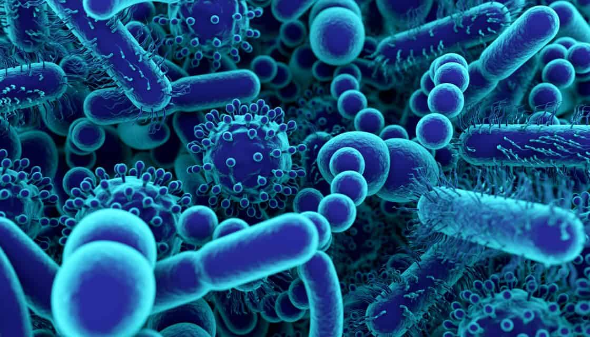

The Story
For centuries, humanity viewed bacteria solely as enemies—pathogens to be eradicated. However, modern science has revealed a profound paradigm shift: the vast majority of microbes living in our bodies are not invaders, but essential partners. You carry roughly 38 trillion bacterial cells, meaning you are actually more microbe than human by pure cell count.
This microscopic metropolis plays a critical role in your daily survival. The bacteria in your digestive tract break down complex carbohydrates that your own stomach cannot process, all while synthesizing essential nutrients like vitamins B and K. They also act as a frontline defense force, crowding out harmful, disease-causing pathogens and training your immune system to distinguish between friend and foe. Without them, human biology would simply collapse.
Fascinatingly, the microbiome also communicates directly with your brain. Through what scientists call the gut-brain axis, these microbes produce neurotransmitters, such as serotonin, which can actively influence your mood, stress levels, and even your food cravings. This profound symbiotic relationship shows that our bodies are not isolated fortresses, but complex, cooperative habitats where microscopic life forms the very foundation of our well-being.

Philosophical Questions
Where does "I" end and "we" begin?
If the bacteria in your gut dictate how you digest food, fight off illnesses, and even influence your mood and cravings, it becomes incredibly difficult to define what constitutes the "self."
You are not a single organism, but a complex, walking ecosystem—a superorganism. This challenges the deeply ingrained human notion of individuality, suggesting that personal identity and health are collaborative efforts rather than solitary states of being.
Does an obsession with sterility harm our connection to nature?
Modern society often equates cleanliness with the total eradication of microbes, using harsh antibacterial soaps and sanitizers to wage a constant war on germs. However, our microbiomes require exposure to diverse, natural environments to stay robust and healthy.
This raises the thought that our modern attempts to completely sanitize our lives may actually be making us weaker, artificially cutting us off from the microscopic diversity that evolution designed us to rely upon.
Is cooperation the dominant force of life on Earth?
While traditional views of nature often focus heavily on the fierce competition of "survival of the fittest," the microbiome demonstrates a very different reality. It shows that profound cooperation is absolutely necessary for complex life to exist at all.
It serves as a microscopic reminder that mutual aid and symbiotic partnerships are just as fundamental to evolution—and survival—as conflict and competition.